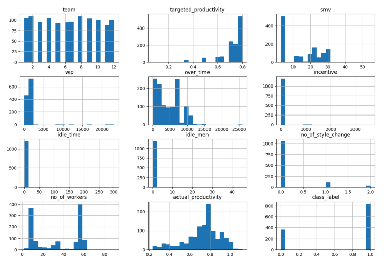
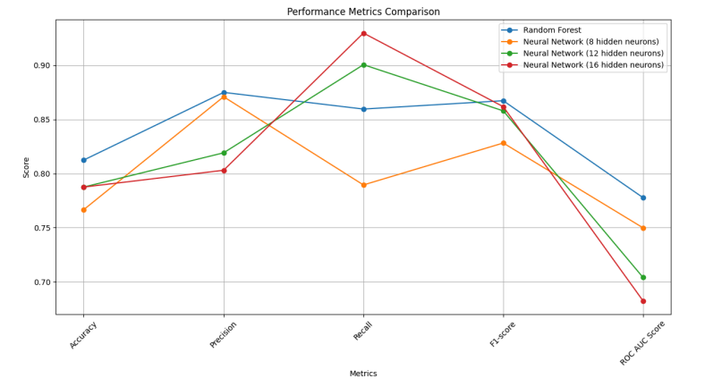

Overview
This project involved building ML models to classify productivity outcomes as satisfactory or unsatisfactory. The key challenge was handling an imbalanced dataset and identifying which features most influenced the outcome — requiring careful preprocessing, model selection, and iterative evaluation.
Methodology
Data Preprocessing & Feature Engineering
Handled missing values, normalised numerical features, and encoded categorical variables. Created new engineered features to better capture patterns in workplace metrics such as efficiency, overtime, and department type.
Neural Network — Keras
Built an initial neural network with a single hidden layer using ReLU activation and dropout regularisation. Tuned hyperparameters including learning rate and dropout rate through iterative experimentation.
Random Forest — Scikit-learn
Benchmarked against a Random Forest classifier, which outperformed the neural network on the imbalanced dataset due to its ensemble approach and stronger generalisation on unseen data.
Evaluation & Visualisation
Compared models across accuracy, precision, recall, and F1-score. Produced clear visualisations of both feature distributions and model performance to communicate findings to a non-technical audience.
Feature Distributions
Bar graphs showing feature distributions after preprocessing, used to understand data structure and inform modelling decisions.

Feature distributions after preprocessing — key to understanding data structure before modelling
Model Performance
Comparison of neural network vs. Random Forest across four evaluation metrics.

Accuracy, precision, recall, and F1-score comparison across both models
Key Takeaways
- End-to-end experience with a real-world ML pipeline: preprocessing, feature engineering, training, evaluation, and communication of results
- Practical understanding of how to handle imbalanced datasets and select models accordingly
- Hyperparameter tuning through iterative experimentation on neural network architecture and dropout configuration
- Skills in communicating technical model results visually to non-technical stakeholders
- These techniques are directly applicable to game AI development, player behaviour segmentation, and adaptive difficulty balancing
Full Documentation
The complete code, methodology, and analysis are available to view below.
View Code Documentation (PDF)